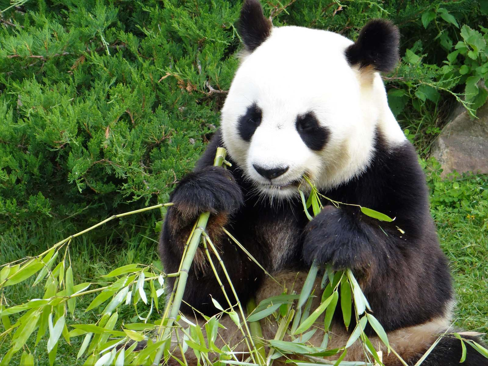
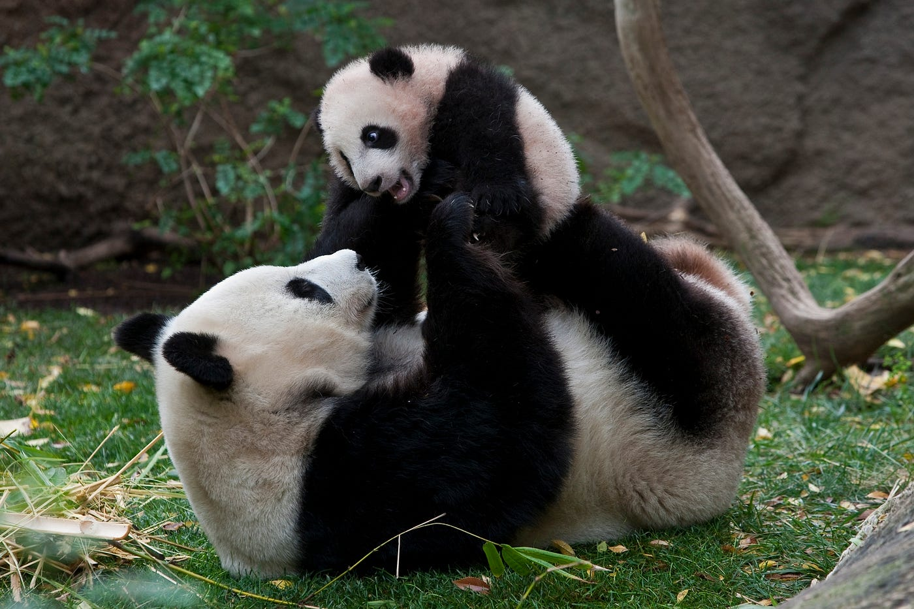
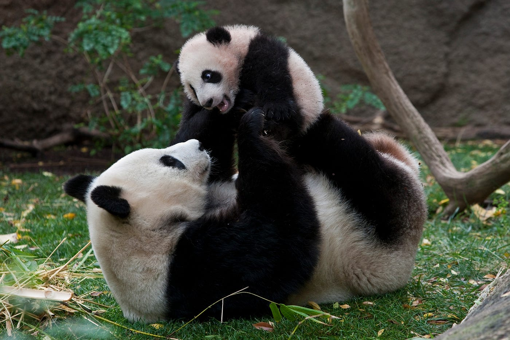

 Los pandas miden unos 150 cm de largo, más unos 10-15 cm de cola. Un panda adulto puede llegar a pesar hasta 150 kg, siendo los machos un 10% mayores y un 20% más pesados que las hembras. Poseen un pelaje blanco con partes negras alrededor de los ojos, en las orejas, hocico, hombros y extremidades.
| Habitad | Ubicacion geografica | Habitos alimenticios | Habitos reproductivos | Estado de conservacion |
| Es de amplio conocimiento que el tipo de hábitat del oso panda es terrestre, pero dentro de todos los hábitats terrestres posibles, el panda habita bosques templados en altura. | Gracias al descubrimiento de registros fósiles, se demostró que la distribución del oso panda alcanzaba Myanmar (Birmania), Vietnam, China y Pekín. Sin embargo, hoy en día sus poblaciones se encuentran únicamente sobre las sierras presentes en el sur oeste de China. | Los pandas deben comer diariamente entre 12 a 38 kilos de bambú, planta que representa el 99% de su dieta, para mantener su nivel de energía. | La temporada de apareamiento es en primavera entre los meses de marzo y mayo, machos y hembras se unen por no más de 2 a 4 días. | Los Pandas gigantes es una de las especies mas exoticas y en peligro de extincion del mundo.Las principales causas de su reducción,son la caza furtiva, la tala de árboles para sembrar cultivos, las operaciones mineras en una región rica en oro y níquel, y la casi desaparición de su principal alimento, el bambú, durante los años 80. |
 
